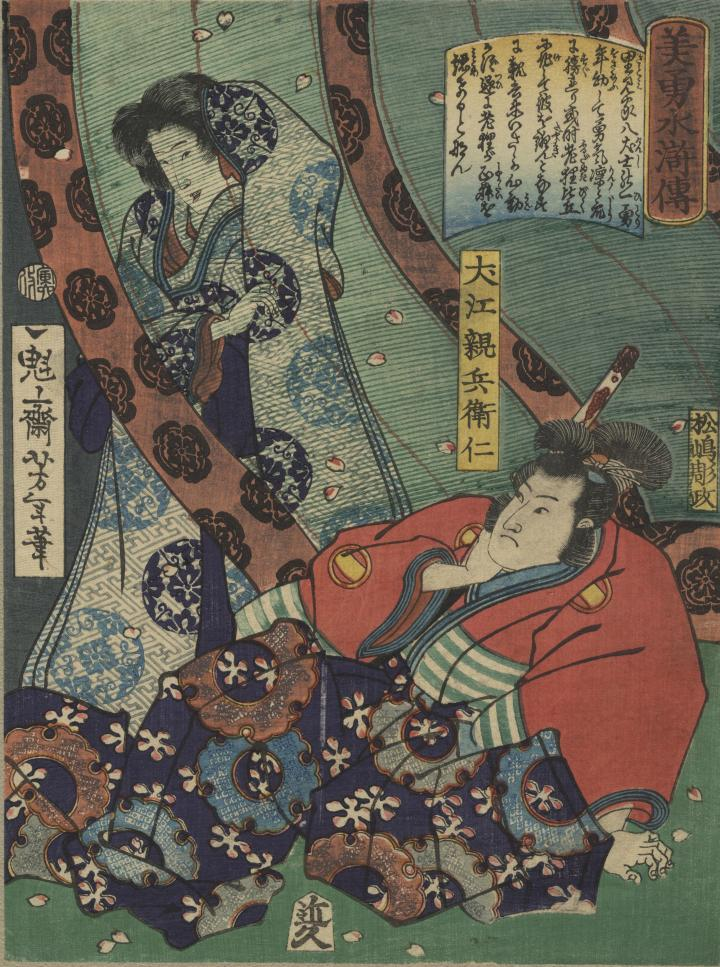

狸が女性に化けて犬江親兵衛仁に近づいている。
著作者：一魁芳年／出典：親書誌：U426_nichibunken_0356：美勇水滸伝 犬江親兵衛仁；ビユウ スイコデン イヌエ シンベエ マサシ／日付：2014／資源識別子：U426_nichibunken_0356_0001_0000
Copyright (c)2010- International Research Center for Japanese Studies, Kyoto, Japan. All rights reserved.